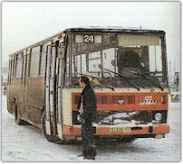

Tramvaj do Neštěmic jezdila od roku 1915. Poslední spoj vyjel v sobotu 31. ledna 1970 a nahradily ho autobusy. Trolejbusy se sem vrátily až v roce 1995.
Počátky ústecké elektrické dráhy


Po dlouhá staletí, hlavně v dobách rozmachu průmyslu v našem okolí, se obyvatelé Neštěmic dostávali do Ústí nad Labem buďto pěšky, koňským povozem a nebo od druhé poloviny minulého století vlakem. Myšlenka stavby elektrické dráhy v Ústí nad Labem se objevovala stále častěji. Vedení města Ústí nad Labem si uvědomovalo, jakou výhodu by v tomto moderním dopravním prostředku pro místní obyvatelstvo získalo.
V roce 1897 byla podepsána smlouva mezi městem Ústí a německou firmou Allgemeine Elektrizitätsgesellschaft Union z Berlína na stavbu elektrické dráhy. Zkušební jízdy se uskutečnily 30. a 31. prosince 1898 a ještě na rok 1899 bylo dohodnuto o dalším zkoušení. Skutečný provoz mezi horním nádražím a Březnem byl zahájen 1. července 1899, přičemž byl také dohodnut záměr prodloužení tratě až do Neštěmic.
Stavba tratě do Neštěmic
Plány na prodloužení tratě elektrické dráhy z Krásného Března do Neštěmic se dlouho odkládaly. Hlavní důvod odkladů byly technické problémy, konkrétně obtížné řešení přechodu přes tehdejší pozemní vyvýšeninu v Krásném Březně. Ale nakonec se problémy překonaly a v roce 1914, krátce před vypuknutím první světové války, byla stavba započata. Z finančních důvodů se ale nedalo stavbu dokončit tak rychle, jak si obyvatelé přáli.
Dne 8. září 1915 byl slavnostně zahájen provoz elektrické dráhy mezi Krásným Březnem a Neštěmicemi. Trať končila u neštěmické kapličky, odkud vedla krátká odbočka k továrně Solvay. Tato odbočka sloužila hlavně k dopravě zaměstnanců továrny a umožnila snížit počet pracujících, kteří se dopravovali do továrny pěšky. Průměrná rychlost provozu činila 15 až 20 km/h, při plné obsazenosti vozidla.
Život s tramvají
Po první světové válce se provoz elektrické dráhy rozvíjel. Byl obnovován vozový park, rozšiřovala se sítka kolejí a zvyšoval se počet přepravovaných osob. V průběhu 20. a 30. let 20. století si neštěmičtí občané tramvaj oblíbili natolik, že se stala jedním ze symbolů obce. Na typické fotografiích z té doby lze vidět tramvaj jak vyjíždí z kopce od Krásného Března a míří k neštěmické zastávce u kapličky.
Mezi neštěmickými občany byly populární různé trasy. Mimo pravidelné dojíždění do práce v Ústí nad Labem se tramvaj využívala také pro výlety do přírody. O víkendech byla naplněná výletníky, kteří pokračovali pěšky z konečné zastávky buď do Ryjic a Ryjických skal, nebo do Blanska a k rozhledně Malvínina stráž.
Úzké profily tratě
Problémy s dopravou do Neštěmic se začaly objevovat už ve 30. letech. Trať mezi Krásným Březnem a Neštěmicemi měla několik úzkých profilů, které omezovaly provoz. Hlavně se jednalo o přejezd silnice s tratí v Krásném Březně, kde se často stávaly dopravní nehody. Město se několikrát snažilo o řešení těchto problémů, ale vždy chybělo potřebné financování a technické možnosti té doby.
Za druhé světové války se provoz tramvaje nezastavil, ale byl omezen kvůli nedostatku energie a náhradních dílů. Po osvobození v roce 1945 byla trať postupně obnovena a pokračovala v provozu, ale již bylo zřejmé, že svou kapacitou nebude stačit rostoucím požadavkům průmyslu a rostoucí populace Neštěmic.
Poslední jízda — 31. ledna 1970
Rozhodnutí o ukončení provozu tramvaje do Neštěmic bylo vynuceno plánovanou výstavbou velkých panelových sídlišť na území obce. Plány předpokládaly rozšíření silnic, úpravu terénu a přestavbu celého provozu, což by s tramvajovou tratí nebylo slučitelné. Oficiálně byl provoz ukončen v sobotu 31. ledna 1970.
Ten den byl pro mnohé občany Neštěmic opravdu smutný. Pamatují si na něj ještě dnes mnozí starší obyvatelé. Poslední tramvaj vyjela z Neštěmic kolem půlnoci a její poslední zastavení u kapličky bylo doprovázeno drobným ceremoniálem. Pamětníci vzpomínají, že si ten večer mnozí lidé ještě šli udělat poslední jízdu, aby se rozloučili s tramvají, která byla součástí jejich životů více než půl století. Následujícího dne byla zahájena pravidelná autobusová doprava, kterou zajišťovaly autobusy Karosa.
Období autobusů


Od února 1970 byla doprava mezi Ústím nad Labem a Neštěmicemi zajišťována výhradně autobusy. Bylo to období překotného rozvoje obce. Výstavba panelových sídlišť Pod Vyhlídkou, Na Mojžíři a dalších přinesla obrovský nárůst obyvatelstva. Počet cestujících v autobusech rychle rostl. V dopravní špičce bývaly autobusy přeplněné a jejich provoz se často zpožďoval, což vedlo k nespokojenosti obyvatelstva.
V průběhu 70. a 80. let se počet autobusových linek stále zvyšoval, byly postaveny nové zastávky a také přibývaly autobusy. I přesto však docházelo k neustálým problémům s kapacitou. Hlavně v ranní a odpolední špičce, kdy zaměstnanci místních továren a obyvatelé sídlišť cestovali do Ústí nad Labem, byly autobusy často plné již od první zastávky.
Návrat trolejbusů v roce 1995


Po roce 1989 začalo město Ústí nad Labem řešit otázku dopravy v Neštěmicích moderněji. Po dlouhých diskuzích a plánování se rozhodlo o zavedení trolejbusové dopravy. Práce na výstavbě trolejbusové sítě začaly v roce 1993 a byly dokončeny v průběhu roku 1995. Trolejbusová doprava byla slavnostně zahájena 6. prosince 1995.
Trolejbusy přinesly výrazné zlepšení dopravy do Neštěmic. Byla zavedena linka z centra Ústí nad Labem přes Krásné Březno do Neštěmic. Trolejbusy nabídly občanům tichý, ekologický a pohodlný způsob přepravy. Mimo jiné se tím také uvolnil provoz na silnicích, protože část autobusové dopravy byla trolejbusovou dopravou nahrazena. Trolejbusové trati se postupně rozšiřovaly až do jednotlivých částí Neštěmic.
Současnost
V současné době je doprava v Neštěmicích kombinací trolejbusové a autobusové dopravy. Trolejbusy zajišťují hlavní trasy mezi centrem Ústí nad Labem a Neštěmicemi, zatímco autobusy obsluhují menší linky a přilehlé obce. Tento systém funguje již několik let a je obecně hodnocen velmi pozitivně. Po mnoha letech se tak Neštěmice dočkaly moderní hromadné dopravy, která odpovídá požadavkům 21. století.